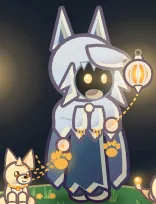
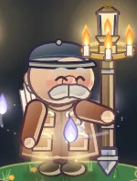

Who walks tonight?
Cursed Forest · TwilightGold 4,210Shards 6

WrenBond 4
Space · rallyRally Whistle: 6 s, all your spirits act faster.

EliasBond 2
Space · shelterSanctuary Ring: 6 s, heal inside, foes slowed at the edge.
With which spirit?
Any spirit awake in the Lantern WebGhost Wolvespack hunts the crowdkindred
Holy Orbitlights circle you
Raven Flockscouts swoop and peck
✦Spirit Boltswake in the Lantern Web
Esc BackC KindredEnter Walk with Wren · Ghost Wolves